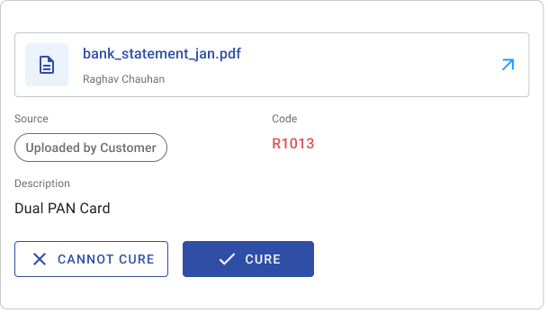
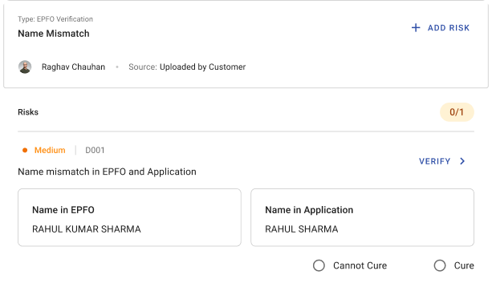
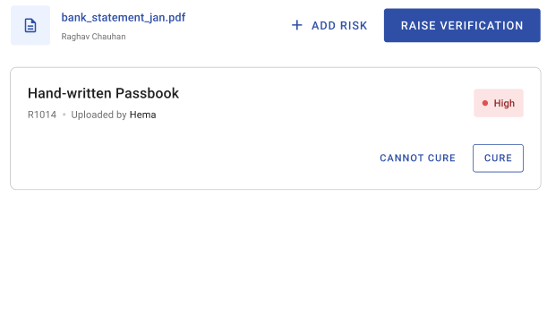
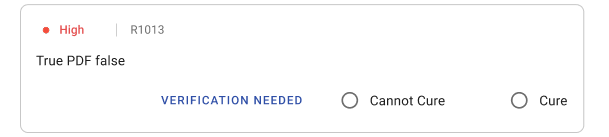
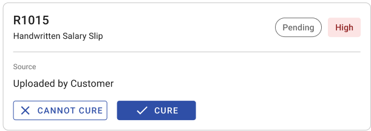
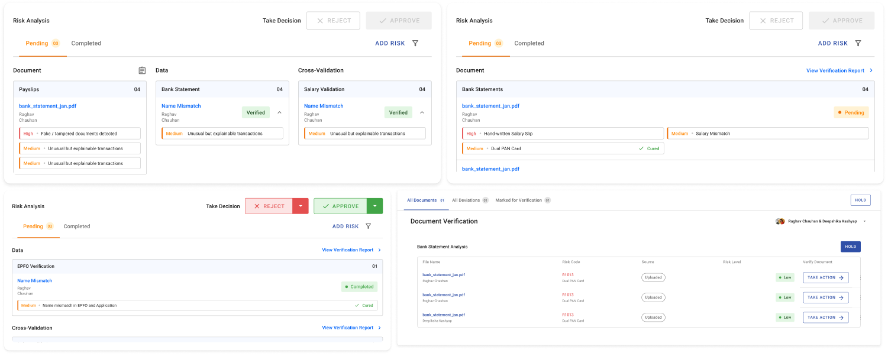
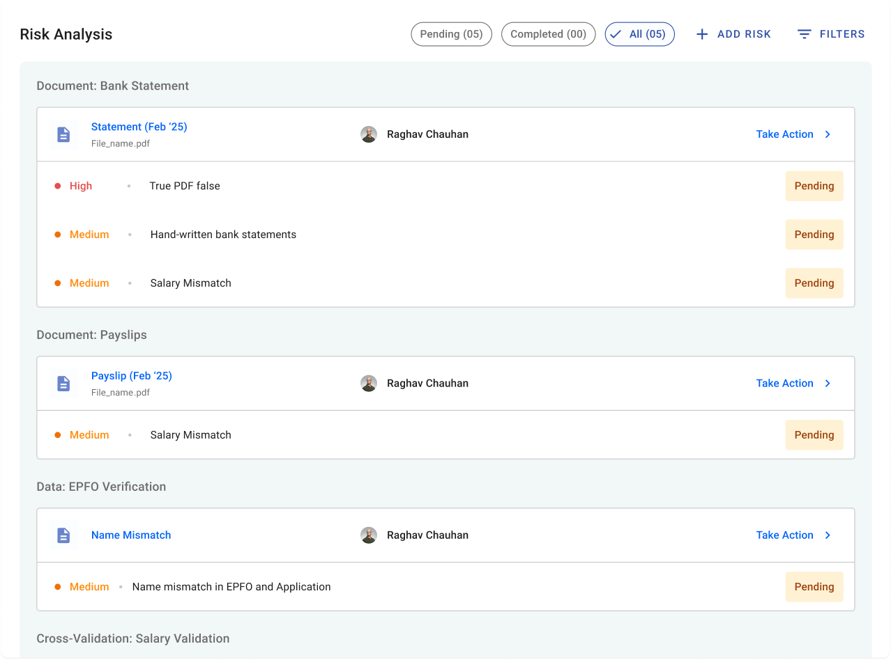

My impact
I led the product from an open-ended UX brief to a production-ready experience, aligning product, engineering, and leadership.
Understanding the brief
Context
You apply for a loan at a bank.
Your creditworthiness is measured by a third-party Credit Information Company.
Their agents decide how risky your documents are for that loan.
Every document in an application carries risks, and an agent decides, document by document, whether the application can move forward.
Some risks could look like:
- Handwritten salary slips
- “Anish Verma Shah” in one document vs. “Anish Shah” in another
- Payslip vs. bank statement mismatches
Decisions they take can look like:
- Cure document / Cannot cure document
- Verify document / Add new risk
- Approve application / Reject application / Verify application
Who are the users?
External agencies who specifically verify a customer’s Credit Information Company (CIC/CIBIL) records on the bank’s behalf.
The primary users pulling CIC/CIBIL data, matching it against the bank’s risk policies to decide loan eligibility and interest rates.
A specialised risk team monitoring credit reports to catch application fraud, identity theft and compromised profiles before credit is extended.
Front-line staff who pull a preliminary credit report, with consent, to surface pre-approved offers during a branch visit.
Here’s what I was told
“There’s an existing flow similar to this, just finish it off.”
This was my response
That flow is built for flexibility: comparing a document against a dashboard, another module, any section. That’s valuable when comparison is optional and open-ended. It’s not when the task is fixed and repeated hundreds of times a day.
Here’s the “existing” flow
Eight steps to close one risk
I walked the inherited flow end to end, step by step, to see exactly where it broke down.
Walkthrough of the inherited flow, step by step
I still had many questions
What I needed answered before designing
+439,847 (very long meetings, indeed)
...And made my version in parallel
Design dilemmas
Here’s how I evaluated each iteration and the trade-offs that led to the final direction.
Dilemma 1
Overlay, or a separate page?
I was told to replicate the overlay flow already used in another module, to keep things consistent. This platform is for users who have to make the correct call on paperwork, since that decision feeds into a longer process with many decisions after it.


Learning
Consistency is important, but not at the cost of the user’s experience on the platform.
Dilemma 2
Cured vs. no action taken, as states
Played with different visual hierarchies and alignments while coordinating with other teams, to understand which information mattered the most.





It led with the key information first and revealed actions progressively on hover, so the user wasn’t overwhelmed by repetitive buttons on every card and could gauge the risk before deciding what to do.
- 1Cure
- 2Cannot Cure
- 3Verify
I spoke to all the teams, and they agreed all three carry equal priority. The user can take whichever action fits, depending on what the risk or document states.
Learning
Iteration only pays off with regular feedback: it’s what let me prioritize the right changes, understand what the user needed contextually, and build a better sense of both the user and the system.
Dilemma 3
Document type, or risk type, on the dashboard?
That meant deciding whether to segregate by document type or by risk type, and prioritizing that with input from other teams.

Give the user enough on the dashboard, through widgets, to understand what they were walking into before opening a specific risk.

- 1Different filters on top
- 2The risks under each document
- 3A status — cured or pending
This design supports accessible navigation while making it easier for users to locate and refine filter selections with minimal cognitive effort.
Closing thoughts
Building the wrong version first was deliberate. When the flawed flow is on screen, you don’t have to argue against it: it argues against itself.
Eight steps didn’t become one because the interface got cleaner. They collapsed because the problem got reframed.
That reframe, aligning three teams with conflicting inputs behind a single direction, was the actual work. It’s the part I’m proudest of, even though it doesn’t screenshot well.